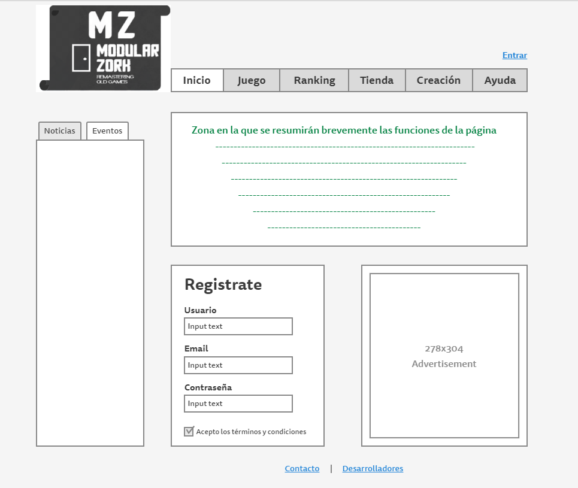
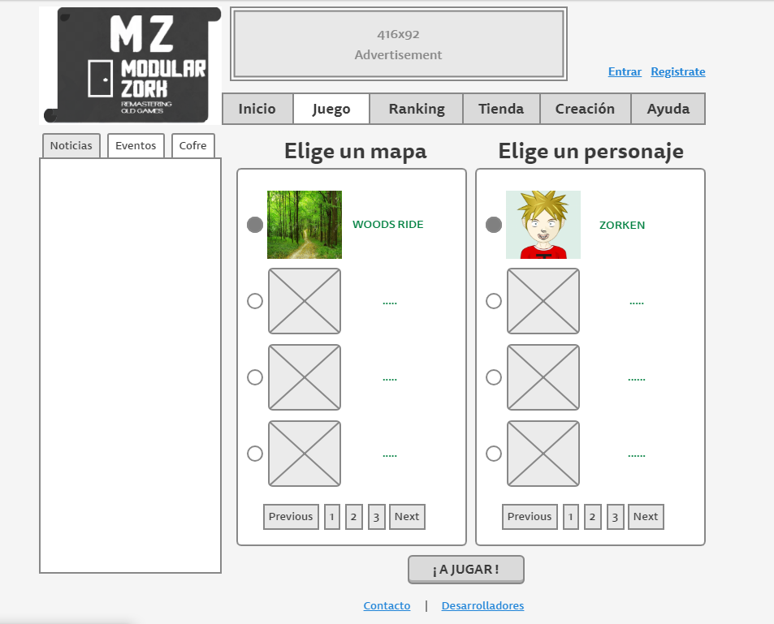
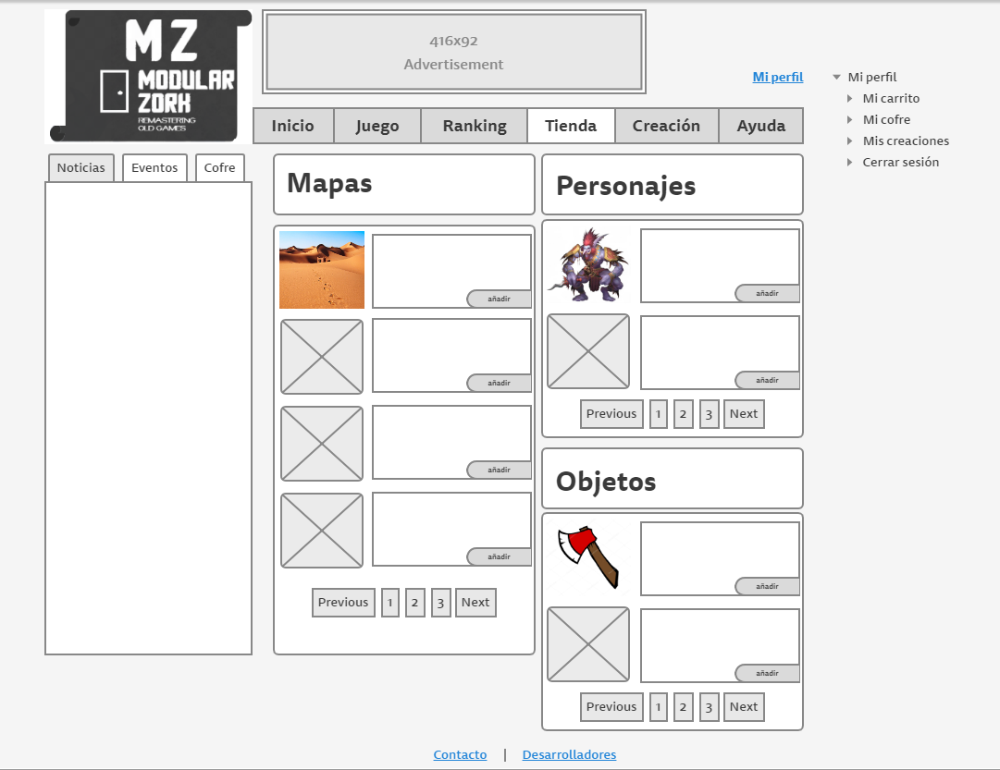
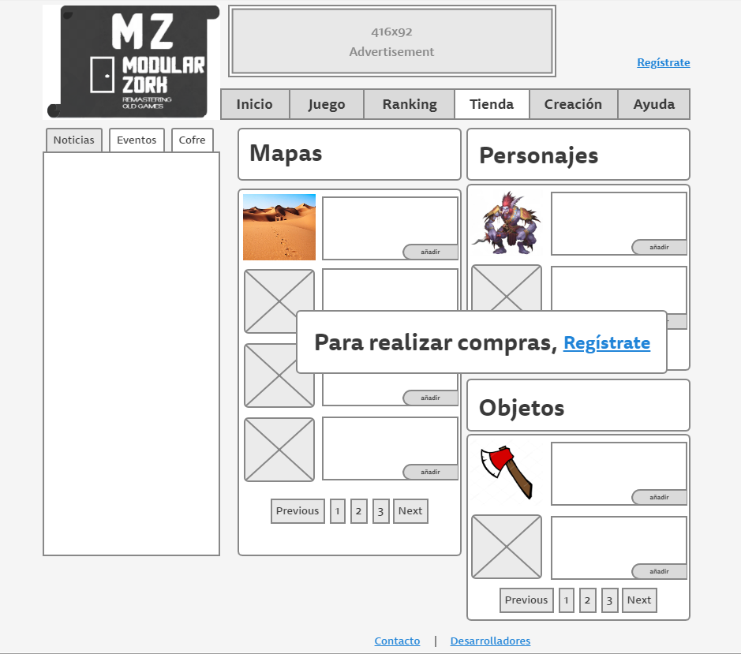

Bocetos:
A continuación se muestran bocetos de imágenes de pantalla de la aplicación.
Esquema general
Todas las páginas de nuestra web tendrán de forma general:
Una imagen con el logo de la web, que a su vez será un enlace a la página de inicio.
En la esquina superior derecha se encuentra un enlace de inicio de sesión para usuarios, que una vez iniciada sesión será un menú desplegable del perfil de usuario y habrá otro enlace para registrarse.
Un menú horizontal con enlaces a las páginas de inicio, juego, ranking, tienda, creación de mapas y ayuda.
A la izquierda de las páginas tenemos una columna interactiva que varía dependiendo de la página.
En la parte inferior hay dos enlaces, uno lleva a una página de contacto y el otro a una página con la descripción de los desarrolladores de la web.
En la parte superior y a la derecha de la página (irá variando) tendremos un bloque de anuncios.
Página principal
En el caso de no iniciar sesión, esta será la vista de la página:
Contiene un cuadro de texto informativo con un breve saludo y una explicación de las funcionalidades de la página.
Tiene un formulario para registrar un nuevo usuario. En el que el usuario deberá escribir en los cuadros de texto su nombre de usuario, contraseña y email. También tendrá que aceptar los términos y condiciones, clickando en el recuadro.
La columna interactiva izquierda tendrá dos pestañas sobre las noticias y eventos de la web.
En el caso de iniciar sesión, esta será la vista de la página:
Tendrá un cuadro interactivo con ofertas para el usuario.
En la columna interactiva izquierda aparecerá otra pestaña con los objetos del usuario.
En la esquina superior derecha tendremos un menú desplegable para acceder a nuestro perfil, cofre, estadísticas, cerrar sesión...
Juego
En el centro de la página tendremos dos secciones:
A la izquierda el usuario tendrá la opción de elegir un mapa con el que jugará.
A la derecha el usuario podrá elegir el jugador que usará en el mapa elegido.
Podremos seleccionar el mapa y jugador que queramos de todas las opciones que nos ofrece la página. Nos moveremos por las páginas de opciones con los botones previous y next
Una vez elegidos ambos, el botón "Jugar", bajo las opciones, se habilitará con un enlace a una segunda pantalla de juego.
Esta es la segunda pantalla de juego en la que el usuario puede empezar a jugar.
En la columna izquierda el usuario podrá ver todos sus objetos disponibles y moverse por la cuadrícula con el scrollbar.
En el centro el usuario verá el mapa elegido para jugar con todos sus contenidos.
Debajo del mapa estará el cuadro de texto que le indicará al usuario las posibles acciones a realizar deberá seleccionar solo una de ellas para poder continuar jugando. Además podrá regular el sonido con una barra de sonido.
A la derecha tendremos un cuadro de puntuación, para que el usuario valore el juego clickando en las estrellas. debajo tendremos un cuadro de texto, donde el usuario podrá dar su opinión escrita sobre el juego.
Ranking
En el centro de la página aparecerá un listado, de los usuarios con mejor puntuación, por el cual nos moveremos con un scrollbar.
Y podremos acceder al perfil de los jugadores que aparezcan en la lista, clickando en sus nombres, que serán enlaces.
Tienda
Se mostrarán varias listas: Mapas, personajes y objetos.
Tendremos las opciones de seleccionar los objetos deseados y añadirlos al carrito.
Más tarde se añadiría un buscador para buscar por palabras o la muestra de objetos por categorías.
En la columna de la izquierda mostraremos las características de nuestro personaje y los diferentes objetos que tengamos en la mochila, en la pestaña cofre.
Tendríamos la posibilidad de acceder a la cesta de objetos mediante un botón.
En el caso de no iniciar sesión, no se permitirá interactuar con la ventana de compras y aparecerá una ventana emergente que indicará que debe iniciarse sesión.
Creación
En esta página se proporcionará al usuario las herramientas necesarias para crear un mapa propio basado en el juego Zork.
Elige un mapa: Se proporcionará al usuario secciones a completar de cada mapa con los objetos por defecto de iniciación en la cuenta, y las nuevas adquisiciones en la tienda de objetos
Elige Monstruos: Se proporcionará al usuario la capacidad de elegir los monstruos contra los que el jugador deberá enfrentarse.
Elige objetos: El usuario dispondrá un selector de objetos que aparecerán en el mapa.
En esta página se proporciona al usuario una interfaz para poder crear su propia historia.
El juego Zork consiste en un juego de preguntas y respuestas para que el usuario llegue al final del mapa.
Elige la pregunta: El creador podrá crear un un texto explicativo de donde se encuentra el usuario en el punto del mapa. De la misma forma deberá proporcionar preguntas al futuro jugador que deberá contestar para poder continuar a lo largo de la historia.
Elige las respuestas: El un creador del mapa deberá proporcionar una selección de respuestas con sentido, para tomar la decisión.
Ayuda
En esta página todos los apartados serán texto deslizante en los cuales tendremos una descripción sobre:
Objetivo del juego: En esta parte describiremos de lo que trata el propio juego, en qué consiste este y una pequeña guía de introducción de como jugar.
Creación: Aquí pondremos una pequeña guía y explicación de cómo un usuario puede crear sus propios mapas y las diferentes opciones sobre estos. Se indicará cómo añadir los mapas creados para que los demás usuarios pueden verlos y jugar sobre estos mapas.
Ranking: Indicaremos las reglas que se seguirán para la asignación de puntos y recompensas para los usuarios según los diferentes modos (juego, creaciones, etc...).
Compras: Se explicará el funcionamiento de las compras en la web, además del tipo de moneda a usar y otros tipos de condiciones según el tipo de usuario (registrado y no registrado).
En la parte superior tendremos una barra de búsqueda que nos permitirá escribir palabras clave para encontrar rápidamente la descripción deseada.
Contacto
En esta página tendremos información relevante acerca de la página web, como actualizaciones en el logo, cambios en las funcionalidades de la pagina..etc.
Dentro de la misma pagina se proporcionará al usuario la opción de contactar con los miembros del equipo de desarrollo.
Desarrolladores

En esta página proporcionaremos un navegador para mostrar el perfil de cada un de los componentes del grupo o miembro de desarrollo.
En cada perfil se mostrara informacion de contacto del desarrollador y un perfil/curriculum de cada uno de ellos.
Mi Perfil

En esta página proporcionaremos al usuario poder cambiar los datos de su perfil.
Proporcionaremos 4 botones para poder cambiar los datos de usuario:
Cambiar metodo de pago: permitira al usuario subir una imagen propia.
Cambiar Nombre: proporcionara al usuario la opcion de cambio de nombre siempre y cuando no exista previamente.
Cambiar Correo: proporcionara al usuario la opcion de cambiar de correo.
Cambiar foto de perfil: permitira al usuario subir una imagen propia.
Mi Carrito
En esta página proporcionaremos al usuario la capacidad de realizar compras dentro de la aplicacion.
En el panel de la izquierda proporcionaremos tres pestañas con los diferentes objetos
Objetos: permitira al usuario subir una imagen propia.
Personajes: proporcionara al usuario la opcion de cambio de nombre siempre y cuando no exista previamente.
Mapas: proporcionara al usuario la opcion de cambiar de correo.
A la izquierda se proporcionara informacion acerca del articulo.
Descripción.
Precio
Boton Pagar: Se proporcionara al usuario el botón para confirmar la compra de los productos.